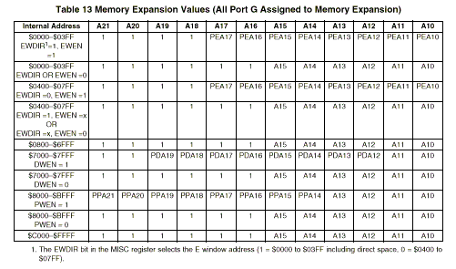
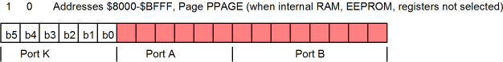

| Previous Section | Next Section | Index | Questions | Search the Text |
We have seen that the 68HC812A4 microcontroller has a 64k byte address space internally, yet has 22 address lines for 4 megabytes of memory. The 16 bit address is mapped into the 22 bit address via memory expansion logic called paging. There are three 16 bit address blocks called page windows, one is the program page window, the second is the data page window, and the third is the extra page window. The window definition register, WINDEF ($0037) is used to enable the data (DWEN), program (PWEN), and/or extra (EWEN) pages, and are disabled at reset. The MXAR ($0038) register is used to enable the upper address lines on port G, which are also disabled at reset, however built-in pull-up resistors hold these pins in the high state.
| Register | Bit 7 | Bit 6 | Bit 5 | Bit 4 | Bit 3 | Bit 2 | Bit 1 | Bit 0 |
|---|---|---|---|---|---|---|---|---|
| WINDEF | DWEN | PWEN | EWEN | 0 | 0 | 0 | 0 | 0 |
| MXAR | 0 | 0 | A21E | A20E | A19E | A18E | A17E | A16E |
We will discuss program memory paging in detail, followed by a brief summary of the other pages which are similar.
The program page window occupies the 16k address range $8000 to $BFFF. When the window is enabled (PWEN=1), addresses within that range are mapped into a 22 bit external address by combining the 8 bits of register PPAGE as the upper bits with the lower 14 bits of the internal address. PPAGE ($0035) is:
| Register | Bit 7 | Bit 6 | Bit 5 | Bit 4 | Bit 3 | Bit 2 | Bit 1 | Bit 0 |
|---|---|---|---|---|---|---|---|---|
| PPAGE | PPA21 | PPA20 | PPA19 | PPA18 | PPA17 | PPA16 | PPA15 | PPA14 |
The effect of this is that PPAGE selects one of 256 16k byte pages which is mapped into the internal address block $8000 to $BFFF. By changing the contents of the PPAGE register we can access the entire 4 megabyte address space within the program page window.
The CSP0 chip select is used to indicate accessing the program memory which is mapped by PPAGE. CSP0 is asserted for references to internal memory locations $8000 to $FFFF regardless of the generated external address. This allows up to 4 megabytes of program ROM while still allowing data RAM and peripherals to be accessed from internal memory addresses in the range $0000 to $7FFF. Example: if PPAGE=0, the internal address $A000 maps to the external address $2000, but with CSP0 asserted so the program ROM is accessed. The internal address $2000 maps to the same external address $2000, but CSP0 will not be asserted. Assuming we are using chip select CSD for external data memory in the address range $0000 to $7FFF, CSD will be asserted. Even though the external addresses are the same, we can still determine if the reference is to program or data memory.
The mapping of all internal addresses to external addresses is in the Freescale documentation and is shown below:

Note that for address range $C000 to $FFFF, all of the high order address lines are forced to 1. When we are using program memory expansion, this internal address range corresponds to the last page, $FF, of program memory. The reset vector is located at external address $3FFFFE and $3FFFFF and not $FFFE and $FFFF. Until paging and the upper address lines are enabled, the internal address range $8000 through $BFFF will appear as though PPAGE=$FE at external addresses $3F8000 through $3FBFFF.
While the program can manipulate the PPAGE register to change the program window page, two instructions have been added which set the PPAGE register directly for subroutine calls and returns. The call instruction is like the jsr instruction with a second argument which specifies a new PPAGE value. The existing PPAGE value is pushed on the stack. Subroutines called with call return using the rtc instruction, which restores the original PPAGE value from the stack. Other than these assisting instructions, writing programs in a paged environment is difficult because the internal address is not the same as the external address. The lbra instruction should be used instead of the jmp instruction since the latter will cause jumps outside of the program window:
ORG 0 ; In program memory, so page is 0,
; However internal address is $8000 with PPAGE=0!
jmp foo ; This fails since it jumps to internal address $100
lbra foo ; This succeeds by jumping to internal address $8100
ORG 100 ; Page 0, offset $100 is internal address $8100
; with PPAGE=0
foo:
All routines must reside within a single page since there is no convenient way to jump between pages. Handling the problems of paging is virtually automatic with modern compilers and linkers, so high level languages, rather than assemblers, are used almost exclusively when memory expansion is used.
Since interrupt processing does not use the PPAGE register, interrupt routines must be placed in the "fixed page" in the internal address range $C000 to $FFFF or in internal EEPROM.
The data page window appears in the 4k byte internal address block $7000 - $7FFF. When enabled with DWEN=1, one of 256 4k byte data memory pages is selected via register DPAGE ($0034):
| Register | Bit 7 | Bit 6 | Bit 5 | Bit 4 | Bit 3 | Bit 2 | Bit 1 | Bit 0 |
|---|---|---|---|---|---|---|---|---|
| DPAGE | PDA19 | PDA18 | PDA17 | PDA16 | PDA15 | PDA14 | PDA13 | PDA12 |
The combined address is 20 bits allowing up to one megabyte of data memory to be addressed within the window. Address lines A21 and A20 are forced to 1. By default, the Data Chip Select is only asserted for internal memory addresses in the range $7000 to $7FFF, matching the data page. If bit CSHDF of register CSCTL1 is set, as it was in the memory interfacing example, the chip select is asserted for the internal memory address range of $0000 to $7FFF. In this case, internal addresses from $0000 to $6FFF which aren't in the space of an internal module (or in the extra page, if used) will appear as external addresses $3F0000 through $3F6FFF. This corresponds to data pages $F0 through $F6.
Since CSD is used for the data page and CSP0 is used for the program page, it is possible to have 4 megabytes of program memory ROM and 1 megabyte of data memory RAM on a single system.
The extra page window appears in a 1k byte internal address block at either $0400 - $07FF (In MISC register, EWDIR=0) or $0000 - $03FF (EWDIR=1). The advantage of the latter is that it includes the direct addressing space ($0000 - $00FF), however the disadvantage is most of the locations are overridden by the register bank. Of course, the register bank can be moved. When enabled with EWIN=1, one of 256 1k byte memory pages is selected via register EPAGE ($0036) :
| Register | Bit 7 | Bit 6 | Bit 5 | Bit 4 | Bit 3 | Bit 2 | Bit 1 | Bit 0 |
|---|---|---|---|---|---|---|---|---|
| EPAGE | PEA17 | PEA16 | PEA15 | PEA14 | PEA13 | PEA12 | PEA11 | PEA10 |
The combined address is 18 bits allowing up to 256k bytes to be addressed within the window. The upper address lines are forced to 1. Chip select 3 must be used when using the extra page, in which case CS3 no longer is a register following chip select as the CS3EP (Chip Select 3 Follows the Extra Page) in CSCTL1 must be set as well.
Unlike the 68HC12 part previously discussed, the MC9S12DP256 has a need for memory expansion even when running in single chip mode. This part has 256KB of Flash ROM which needs to be accessible, along with the RAM, register block, and EEPROM, within a 64KB address space.
The 256KB Flash ROM is divided into 16 16KB pages, numbered $30 through $3F. This corresponds to the 20 bit physical address (as seen in assemblers, program loaders and some debuggers) of $C0000 through $FFFFF. Normally, page $3E is accessible via memory addresses $4000 through $7FFF, page $3F is accessible via memory addresses $C000 through $FFFF, and any page can be accessed via the "window" at memory addresses $8000 through $BFFF by storing the desired page number in the PPAGE register.
| Register | Bit 7 | Bit 6 | Bit 5 | Bit 4 | Bit 3 | Bit 2 | Bit 1 | Bit 0 |
|---|---|---|---|---|---|---|---|---|
| PPAGE | 0 | 0 | PIX5 | PIX4 | PIX3 | PIX2 | PIX1 | PIX0 |
While the program can directly manipulate the PPAGE register to change the window page, two instructions have been added which set the PPAGE register directly for subroutine calls and returns. The call instruction is like the jsr instruction with a second argument which specifies a new PPAGE value. The existing PPAGE value is pushed on the stack. Subroutines called with call return using the rtc instruction, which restores the original PPAGE value from the stack. Other than these assisting instructions, writing programs in a paged environment is complicated by the fact that the internal address is not the same as the Flash ROM address. Programming should be handled using assemblers and compilers that are aware of the memory expansion and handle all the details automatically.
All routines must reside within a single page since, unlike subroutine calls; there is no convenient way to jump between pages. Since interrupt processing does not use the PPAGE register, interrupt routines must be placed in fixed pages $3E or $3F, or in the EEPROM.
When using the HCS12 in Expanded modes to attach external memory devices, the contents of the PPAGE register are presented as the lower 6 bits of Port K and only the lower 14 bits of the PortA/B address bus are used. Memory locations which are not handled by internal devices can access external memory. Thus Port K values of $00 through $2F combined with memory addresses in the program window, $8000 through $BFFF, can be used. This allows connecting up to 768K of external memory.

Port K must be enabled for use by setting the EMK bit in the MODE register. There are two bits in the MISC register that allow additional external access at the expense of Flash ROM access. The ROMON bit, if 0, will disable the Flash ROM. In this case all addresses that are not used by EEPROM, RAM, or the registers will be available to external devices. The ROMHM bit, if 1 will disable access to the Flash ROM in the address range $4000 to $7FFF. Of course this page $3E can still be accessed in the program window by setting PPAGE to $3E.
Now if the internal Flash is to be disabled, how is it possible to configure the microcontroller with ROMON=1? At power-up bit 7 of port K is sampled. The voltage on the pin is used to set the ROMON bit to 1 if high or 0 if low. This is the same technique that was used to set the mode bits.
Continue with Serial Communication Interface.
Return to the Index.